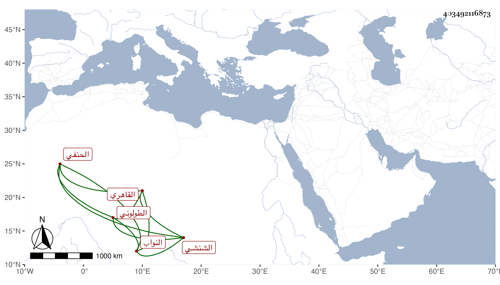

0902Sakhawi.DawLamic.ITO20230111-ara1.EIS1600.403492116873
Biography ID: 403492116873
449
محمد بن محمد بن عمر بن محمد بن موسى بن محمد أكمل الدين بن خير الدين بن ناصر الدين بن شمس الدين الشنشي الاصل القاهري الطولوني الحنفي أحد النواب كسلفه ويعرف كهم بالشنشي . ولد في ربيع الآخر سنة خمس وخمسين وتدرب بأبيه وناب عن قضاة مذهبه وتنزل في الجهات كالصرغتمشية وكان يحضر عندي في دروسها واختص بقاضي المذهب ناصر الدين الأخميمي وقدمه لكثير من الاستبدالات ، وله ثروة من قبل أبيه ويقال أن أمه وهي فيما قاله لي ابنه لشخص حنفي يقال له محمود بن يوسف مثرية أيضا ، وحج وهي معه في سنة سبع وتسعين وجاور التي تليها وربما توجه للزيارة في قافلة الحنبلي وعاد سريعا .
